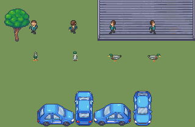

Native scene

All frames

Chronological strips


Independent volumes over authored art

Natural drake draft, 13px profiles beside the approved Explorer. Human review pending.
Down, up, left and right. Submerged paddle strokes are subtle at this scale; flight uses jointed wings and tucked feet. Rear hides the front eyes and bill.
Review observations · Integrity checks · Native loop · Enlarged loop
